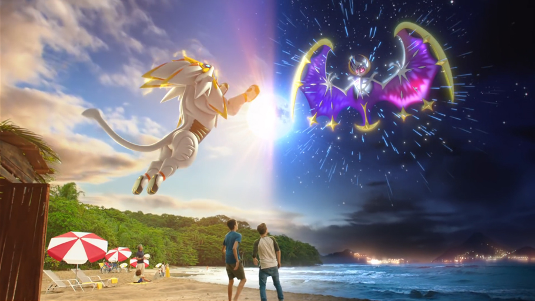
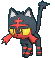

Pokémon Sol / Luna distribuye 10 millones de juegos para su lanzamiento
Nintendo ha aumentado el número de copias que pone a la venta en comparación con Pokémon X / Y.
Se pone a la venta Pokémon Sol / Pokémon Luna en algunos mercados como Norteamérica y Japón, y Nintendo ha preparado tal acontecimiento distribuyendo diez millones de juegos a las tiendas de todo el mundo.
Una cifra que, según apunta el magazine japonés Famitsu, supera el volumen de copias que la Gran N destinó en su momento al lanzamiento de Pokémon X / Y, que es la entrega más vendida de Nintendo 3DS con 15,64 millones de juegos. A nadie debería sorprender esta cifra teniendo en cuenta que ya las reservas del juego apuntaban a cifra récord.
En Europa tendremos que esperar al 23 de noviembre para disfrutar de esta nueva aventura de rol.
¿A quién elegiras?
